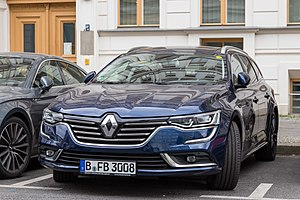
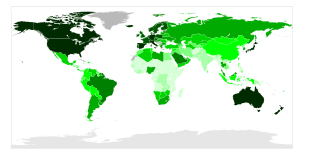

Automobil (zkráceně auto, z řeckého αυτός autos, sám, a latinského mobilis, pohyblivý) je dvoustopé osobní nebo nákladní silniční motorové vozidlo. Oproti této definici se mezi automobily obvykle neřadí autobusy. Jedná se o jeden z mnoha dopravních prostředků. Rozdělují se dle druhu pohonu, např. parní stroj, dieselové, zážehové, elektro aj.
původ a etymologický význam slova
Slovo automobil (zastarale kolojezd) pochází z řeckého άυτο („áuto“), samostatně a latinského mobilis ve významu pohyblivý. Často se používá zkrácený tvar auto, ve starší češtině byl rovněž užíván doslovný překlad slova automobil – samohyb. Automobil je tedy etymologicky definován jako samostatně se pohybující pozemní dopravní prostředek, který je nezávislý na kolejích nebo trolejích a k jehož pohybu není třeba tažných zvířat či lidské síly a je schopen se po zemi pohybovat díky svému vlastnímu pohonu. Této definici, která zahrnuje i motorová jednostopá vozidla (motorky, mopedy, motorová jízdní kola), autobusy a pojízdné pracovní stroje, však odpovídá v právních předpisech termín motorové vozidlo. Slovo automobil (auto) se používá v užším významu.